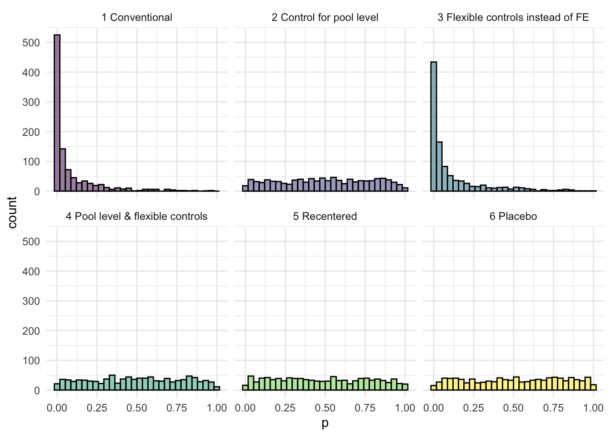
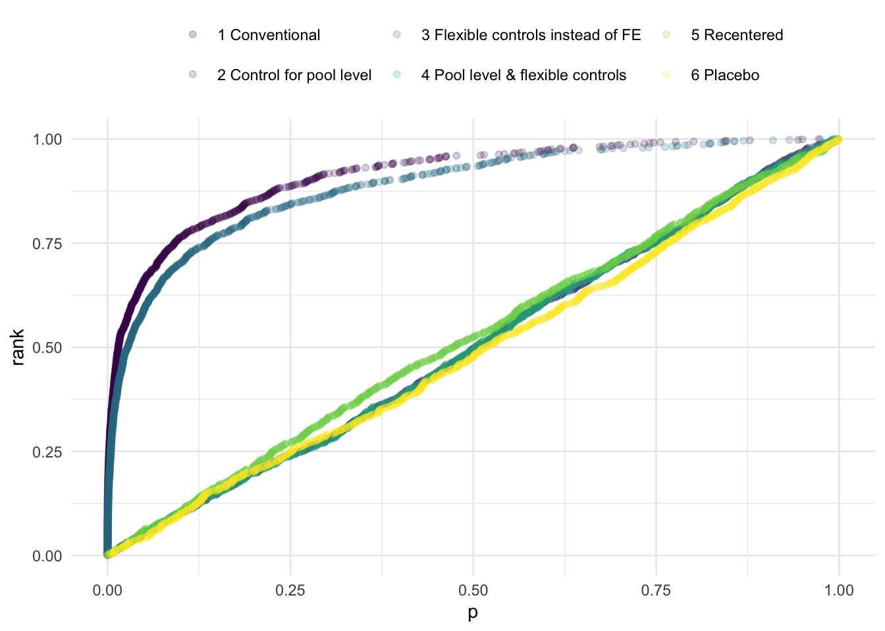
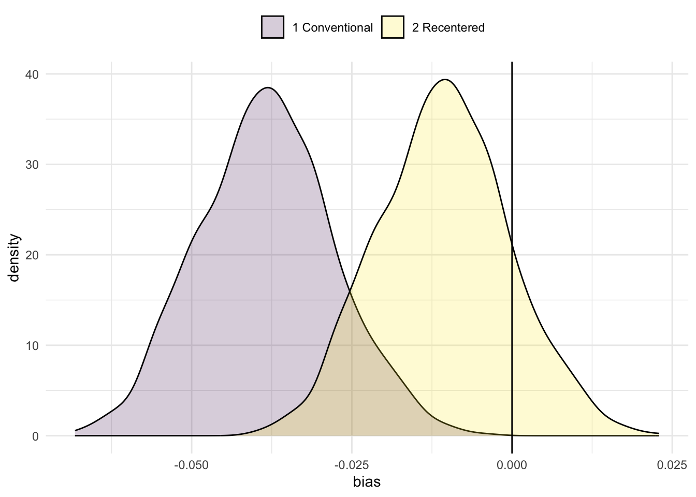

set.seed(1909)Simulating the mother groups DGP
1 Goal
The goal is to simulate a data generating process mimicking the mother group assignment in Denmark. It is used to understand the role of fixed effects and the role of exclusion bias. Focus in on balancing tests and confounding factors.
2 Preparation
We set seed and load libraries.
Set seed
Load libriaries
library(ggplot2) # To create charts
library(dplyr) # Data manipulation tools
library(lubridate) # Date manipulation tools
library(fixest) # Estimation
library(data.table) # Data manipulation tools
library(modelsummary)2 Define Data Generating Process
Note that the assignment is only strict based on district, but not based on mother age, parity and date of birth. This is true to the real DGP (I believe), but makes the FE tricky. I.e. a nurse will only assign mothers to mother groups within her own district, but in terms of age, parity and date of birth (of the child) she is not strict, but instead just allocated to the closest neighbour.
Code
DGP_fast <- function(n = 70000, n_districts = 500) {
# District identifier
id_district <- sample(1:n_districts, n, replace = TRUE)
# District unobserved effect
district_effect <- rnorm(n_districts, mean = 0, sd = 1)
# Individual unobserved effect
U <- district_effect[id_district] + rnorm(n)
# Covariates
x_age <- round(runif(n, 18, 40))
x_parity <- sample(1:2, n, replace = TRUE)
x_schooling <- round(9 + 0.2 * x_age + 0.8 * U + rnorm(n))
x_income <- round(200000 + 5000 * x_schooling + 10000 * U + rnorm(n, 0, 20000))
gm_lsupply <- pmax(0, 20 + 0.5 * U + rnorm(n, 0, 5))
x_dob <- sample(seq(as.Date("2010-01-01"), as.Date("2017-12-31"), by = "day"), n, replace = TRUE)
# Create data frame
dt <- data.table(id_mother = 1:n, id_district, x_age, x_parity,
x_schooling, x_income, gm_lsupply, x_dob)
# Assign mother groups
setorder(dt, id_district, x_parity, x_dob, x_age)
dt[, count := 1:.N, by = id_district]
dt[, group_id := floor((count - 1) / 5)]
dt[, id_mother_group := paste(id_district, group_id, sep = "_")]
# Create fixed effects
dt[, x_quarter := lubridate::quarter(x_dob, with_year = TRUE)]
dt[, x_month := lubridate::month(x_dob)]
dt[, x_year := lubridate::year(x_dob)]
dt[, x_young := as.integer(x_age < 30)]
# Leave-one-out calculations
dt[, `:=`(
sum_schooling = sum(x_schooling),
sum_income = sum(x_income),
n_group = .N
), by = id_mother_group]
dt[, x_schooling_m1 := (sum_schooling - x_schooling) / (n_group - 1)]
dt[, x_income_m1 := (sum_income - x_income) / (n_group - 1)]
# Leave-one-out calculations, district, year and month level
dt[, `:=`(
sum_schooling = sum(x_schooling),
sum_income = sum(x_income),
n_group = .N
), by = id_district]
dt[, x_schooling_d1 := (sum_schooling - x_schooling) / (n_group - 1)]
dt[, x_income_d1 := (sum_income - x_income) / (n_group - 1)]
# Recentered IV
dt[, x_schooling_m1_recentered := x_schooling_m1-x_schooling_d1]
# Statically model labor supply
# Initial (baseline) labor supply without peer effect
dt[, lsupply_base := pmin(40, pmax(0,
20 + # base level
0.5 * U + # unobserved factor
0.3 * gm_lsupply + # grandmother's influence
rnorm(.N, 0, 5) # noise
))]
# Leave-one-out peer effect within mother group
dt[, `:=`(
sum_lsupply = sum(lsupply_base),
n_group = .N
), by = id_mother_group]
dt[, x_lsupply_peers := (sum_lsupply - lsupply_base) / (n_group - 1)]
# Leave-one-out peer effect within district
dt[, `:=`(
sum_lsupply = sum(lsupply_base),
n_group = .N
), by = id_district]
dt[, x_lsupply_peers_d := (sum_lsupply - lsupply_base) / (n_group - 1)]
dt[, x_lsupply_peers_rc := x_lsupply_peers-x_lsupply_peers_d]
# Final labor supply including peer effect
dt[, y_lsupply := pmin(40, pmax(0,
lsupply_base +
0.2 * x_lsupply_peers # peer effect coefficient
))]
# Keep only relevant columns
dt[, .SD, .SDcols = patterns("^id_", "^x_", "^gm_","^y_")]
return(dt)
}Show data
Code
df<-DGP_fast()
setorder(df, id_district, x_parity, x_dob, x_age)
head(df[, .SD, .SDcols = c("id_district","x_dob","x_age","x_parity","id_mother_group","y_lsupply")],n=20) id_district x_dob x_age x_parity id_mother_group y_lsupply
<int> <Date> <num> <int> <char> <num>
1: 1 2010-01-25 35 1 1_0 27.89592
2: 1 2010-09-06 22 1 1_0 30.60319
3: 1 2010-10-23 33 1 1_0 34.54620
4: 1 2010-10-25 28 1 1_0 32.44216
5: 1 2010-11-18 23 1 1_0 36.48656
6: 1 2011-01-17 33 1 1_1 29.77068
7: 1 2011-01-31 27 1 1_1 26.18926
8: 1 2011-04-07 27 1 1_1 24.19758
9: 1 2011-05-05 20 1 1_1 23.40022
10: 1 2011-05-08 31 1 1_1 28.38030
11: 1 2011-05-09 37 1 1_2 29.33789
12: 1 2011-05-25 34 1 1_2 32.01883
13: 1 2011-07-24 21 1 1_2 34.19439
14: 1 2011-08-14 37 1 1_2 31.01366
15: 1 2011-08-20 40 1 1_2 35.52345
16: 1 2011-08-24 32 1 1_3 35.27017
17: 1 2011-09-09 38 1 1_3 37.74765
18: 1 2011-09-30 35 1 1_3 26.95258
19: 1 2011-10-11 28 1 1_3 35.83163
20: 1 2011-11-27 21 1 1_3 34.33218
id_district x_dob x_age x_parity id_mother_group y_lsupply3 The conventional balancing check
So now let us see what happens when we test for balancing.
Preparation
First we create a dataset to store results
Code
#Iterations
I=1000
# Dataset
df_results<-data.frame(i=1:I,p=NA,type="1 Conventional")
df_results_pool<-data.frame(i=1:I,p=NA,type="2 Control for pool level")
df_results_controls<-data.frame(i=1:I,p=NA,type="3 Flexible controls instead of FE")
df_results_controls_pool<-data.frame(i=1:I,p=NA,type="4 Pool level & flexible controls")
df_results_recenter<-data.frame(i=1:I,p=NA,type="5 Recentered")
df_results_placebo<-data.frame(i=1:I,p=NA,type="6 Placebo")Simulate
Now we test for balance using 3 different approach
We regress own schooling on peer schooling: \(schooling_i=\alpha_0+\alpha_1 schooling_{i-1}+DistrictFE_i+YoungAgeFE_i+ParityFE_i+MonthOfBirthFE_i+u_i\).
We regress own schooling on peer schooling, including pool leave one out level schooling: \(schooling_i=\alpha_0+\alpha_1 schooling_{i-1}+\alpha_2 DistrictSchooling_{i-1}+DistrictFE_i+YoungAgeFE_i+ParityFE_i+MonthOfBirthFE_i+u_i\).
Like 2, but with FE for year and month and controls for mother age: \(schooling_i=\alpha_0+\alpha_1 schooling_{i-1}+\alpha_2 DistrictSchooling_{i-1}+\alpha_3 AgeFE_i+DistrictFE_i+ParityFE_i+YearFE_i+MonthFE_i+u_i\).
And we then compare that to a placebo regression (where we added a random variable, ideally we would randomly reallocate variables, but one step at the time)
Code
for (i in 1:I){
# Generate DGP
mydata<-DGP_fast()
# Add random variable
mydata$x=rnorm(n=nrow(mydata),0,1)
# 1 Conventional
res<-feols(x_schooling~x_schooling_m1|id_district+x_quarter+x_young+x_parity,data=mydata,notes=FALSE)
# Extract p-value from F-test
p_value <- summary(res)$coeftable["x_schooling_m1", "Pr(>|t|)"]
# Store p-value in results dataset
df_results$p[i] <- p_value
# 2 Control for pool level
res<-feols(x_schooling~x_schooling_m1+x_schooling_d1|id_district+x_quarter+x_young+x_parity,data=mydata,notes=FALSE)
# Extract p-value from F-test
p_value <- summary(res)$coeftable["x_schooling_m1", "Pr(>|t|)"]
# Store p-value in results dataset
df_results_pool$p[i] <- p_value
# 3 Control for pool level, flexible controls
res<-feols(x_schooling~x_schooling_m1+x_age+x_parity|id_district+x_year+x_month,data=mydata,notes=FALSE)
# Extract p-value from F-test
p_value <- summary(res)$coeftable["x_schooling_m1", "Pr(>|t|)"]
# Store p-value in results dataset
df_results_controls$p[i] <- p_value
# 4 Control for pool level, flexible controls
res<-feols(x_schooling~x_schooling_m1+x_schooling_d1+x_age+x_parity|id_district+x_year+x_month,data=mydata,notes=FALSE)
# Extract p-value from F-test
p_value <- summary(res)$coeftable["x_schooling_m1", "Pr(>|t|)"]
# Store p-value in results dataset
df_results_controls_pool$p[i] <- p_value
# 5 Recentered IV
res<-feols(x_schooling~x_schooling_m1_recentered|id_district+x_quarter+x_young+x_parity,data=mydata,notes=FALSE)
# Extract p-value from F-test
p_value <- summary(res)$coeftable["x_schooling_m1_recentered", "Pr(>|t|)"]
# Store p-value in results dataset
df_results_recenter$p[i] <- p_value
# 6 Placebo
res<-feols(x_schooling~x|id_district+x_quarter+x_young+x_parity,data=mydata,notes=FALSE)
# Extract p-value from F-test
p_value <- summary(res)$coeftable["x", "Pr(>|t|)"]
# Store p-value in results dataset
df_results_placebo$p[i] <- p_value
# Print
if (i%%50==0){
cat(paste(i,"\n"))
}
else{
cat("*")
}
}*************************************************50
*************************************************100
*************************************************150
*************************************************200
*************************************************250
*************************************************300
*************************************************350
*************************************************400
*************************************************450
*************************************************500
*************************************************550
*************************************************600
*************************************************650
*************************************************700
*************************************************750
*************************************************800
*************************************************850
*************************************************900
*************************************************950
*************************************************1000 Charts
Now we create charts of p values. They should be uniformly distributed. We start with a histogram.
Code
df<-rbind(df_results,df_results_placebo,df_results_controls,df_results_pool,df_results_controls_pool,df_results_recenter)
ggplot(df,aes(x=p,group=type,fill=type))+
geom_histogram(alpha=0.5,color="black")+
scale_fill_viridis_d() +
facet_wrap(~type)+
theme_minimal()+labs(color=" ",fill=" ")+
theme(legend.position = "none")
It might be easier to read in a plot of CDFS
Code
df<-rbind(df_results,df_results_placebo,df_results_controls,df_results_pool,df_results_controls_pool,df_results_recenter)%>%
arrange(type,p)%>%
group_by(type)%>%mutate(rank=row_number()/n())
ggplot(df,aes(x=p,group=type,y=rank,color=type))+
geom_point(alpha=0.2)+
scale_color_viridis_d() +
theme_minimal()+labs(color=" ",fill=" ")+
theme(legend.position = "top")+
guides(color = guide_legend(nrow = 2))
4 The outcome
Code
#Iterations
I=1000
# Dataset
df_results<-data.frame(i=1:I,bias=NA,type="1 Conventional")
df_results_recenter<-data.frame(i=1:I,bias=NA,type="2 Recentered")Code
mydata<-DGP_fast()
for (i in 1:I){
# Generate DGP
mydata<-DGP_fast()
# 1 conventional reg
res<-feols(y_lsupply~x_lsupply_peers+x_schooling+x_schooling_m1+x_income+x_income_m1|id_district+x_quarter+x_young+x_parity,data=mydata,notes=FALSE)
bias<-summary(res)$coeftable["x_lsupply_peers", "Estimate"]-0.2
df_results$bias[i] <- bias
# 2 recenter
res<-feols(y_lsupply~x_lsupply_peers_rc+x_age,data=mydata,notes=FALSE)
bias<-summary(res)$coeftable["x_lsupply_peers_rc", "Estimate"]-0.2
df_results_recenter$bias[i] <- bias
# Print
if (i%%50==0){
cat(paste(i,"\n"))
}
else{
cat("*")
}
}*************************************************50
*************************************************100
*************************************************150
*************************************************200
*************************************************250
*************************************************300
*************************************************350
*************************************************400
*************************************************450
*************************************************500
*************************************************550
*************************************************600
*************************************************650
*************************************************700
*************************************************750
*************************************************800
*************************************************850
*************************************************900
*************************************************950
*************************************************1000 Code
df<-rbind(df_results,df_results_recenter)
datasummary_balance(bias~type,fmt = fmt_sprintf("%.3f"),dinm_statistic="p.value",df)| 1 Conventional (N=1000) | 2 Recentered (N=1000) | |||||
|---|---|---|---|---|---|---|
| Mean | Std. Dev. | Mean | Std. Dev. | Diff. in Means | p | |
| bias | -0.039 | 0.010 | -0.010 | 0.010 | 0.028 | 0.000 |
Show chart
Code
ggplot(df,aes(x=bias,group=type,fill=type))+
geom_density(alpha=0.2)+
scale_fill_viridis_d() +
theme_minimal()+labs(color=" ",fill=" ")+
theme(legend.position = "top")+ geom_vline(xintercept=0)